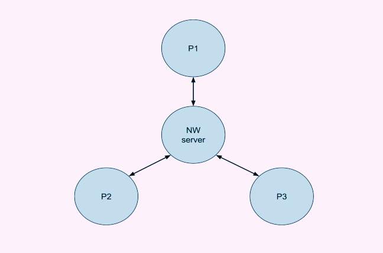
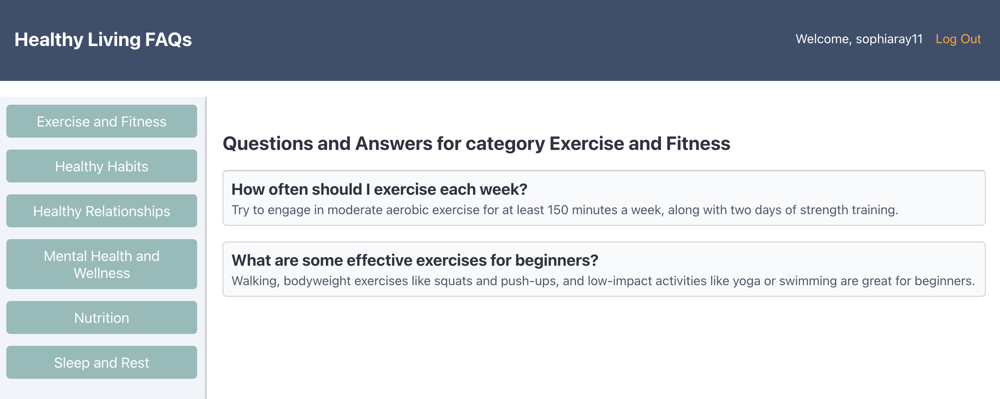
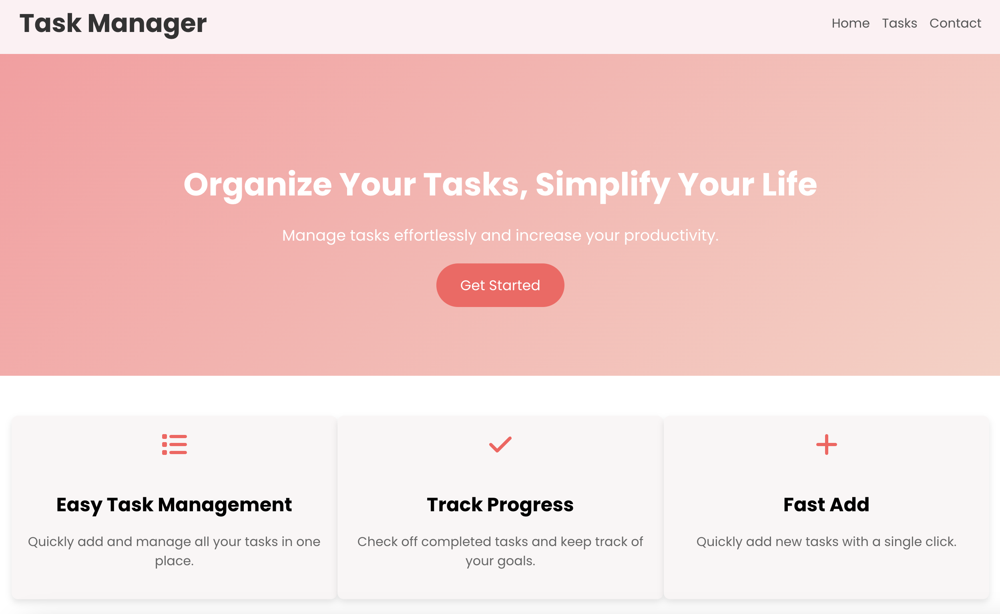
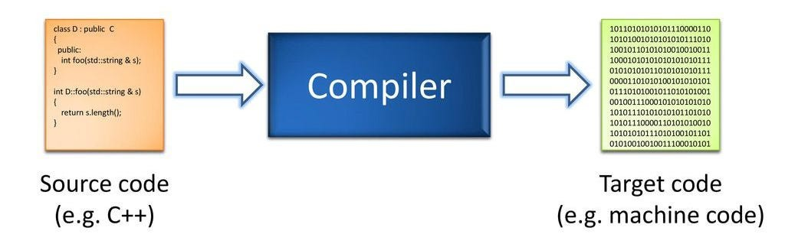

December 2024
Fault Tolerant Distrubuted LLM Service
Designed and implemented a fault-tolerant distributed
conversational AI system utilizing Multi-Paxos consensus to ensure
high availability and resilience. Integrated Google’s Gemini LLM
API to enable intelligent, context-aware responses across
replicated servers. Simulated real-world crash and network
failures with dynamic link management, ensuring seamless recovery
and consistent conversation states. This project showcases
advanced distributed systems concepts applied to practical,
large-scale AI applications.

October 2024
Healty Living Application

Built a full-stack web application providing categorized health
FAQs. Implemented secure user authentication, storing login and
registration data securely to enable personalized user sessions.
Utilized React for the front end, Node.js for the backend, and a
responsive UI for smooth navigation between login, registration,
and main content pages.
September 2024
Task Manager Application

Created a responsive task management app allowing users to add,
track, and filter tasks. Built with React and a modern UI using
HTML5, CSS3, and FontAwesome icons. Ensured a mobile-friendly
design for seamless use across devices.
March-June 2024
C Flat Compiler

Developed a fully functional compiler for a subset of the C
language. Implemented all five stages of compilation, including
lexing, parsing, lowering, code generation, and optimization,
using C++ for efficiency and automation.